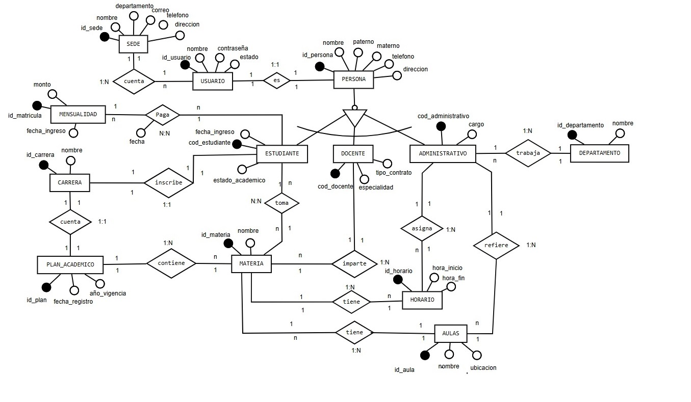

IV. MODELADO ORIENTADO A OBJETOS (UML)
2. Diagrama Entidad Relación (DER)
El DER es una representación gráfica de la estructura de los datos del sistema. Dada la complejidad de la gestión multi-sede y la variedad de usuarios, el modelo debe ser robusto y flexible para soportar futuros cambios normativos sin requerir una reestructuración total.
Entidades Fundamentales del Modelo:
- Estudiante: Datos personales, historial y relación 1:N con la entidad Pago.
- Docente: Información de contacto y relación 1:N con Asignatura/Curso.
- Asignatura/Materia: Identificación, prerrequisitos y relación N:M con Estudiante (a través de la entidad Inscripción).
- Sede: Entidad que gestiona la ubicación geográfica (La Paz, El Alto, Santa Cruz, etc.) y se relaciona con Estudiante, Docente y Asignatura (para la gestión local).
- Calificaciones: Entidad que une Asignatura, Estudiante y Docente.
El modelo busca evitar la redundancia y facilitar el acceso rápido a los datos de cada una de las cinco sedes del Instituto Simón Bolívar.
[Diagrama Entidad Relación - Sistema ITSB]
1. Diagrama de Casos de Uso de Negocio (CUN)
Figura 3: Diagrama de Casos de Uso de Negocio.
Actores y Casos de Uso Clave
| Tipo | ID | Descripción |
|---|---|---|
| Actor | AN1 | Administrador |
| Actor | AN2 | Docente |
| Actor | AN3 | Estudiante |
| Caso de Uso | CUN1 | Gestión de curso |
| Caso de Uso | CUN2 | Gestión de registro |
| Caso de Uso | CUN4 | Solicitud registro |
| Caso de Uso | CUN6 | Solicitud Historial académico |
2. Diagrama de Clases
El Diagrama de Clases define la estructura estática del sistema. Muestra las clases que componen el sistema, sus atributos, operaciones (métodos) y las relaciones entre ellas (herencia, composición y agregación).
Figura 4: Diagrama de Clases que modela la estructura de datos y lógica de la aplicación.